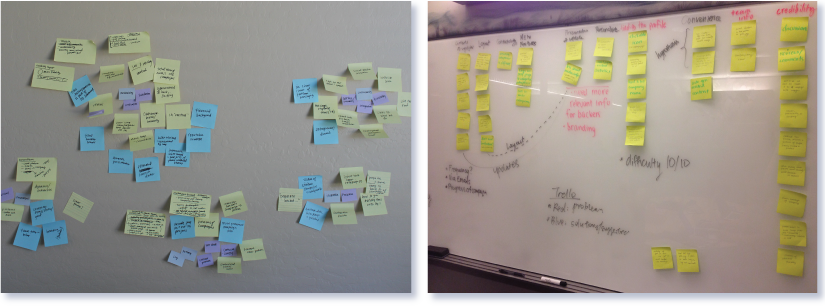
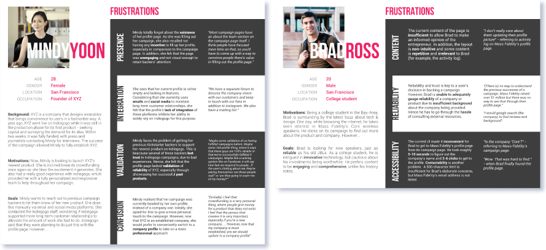
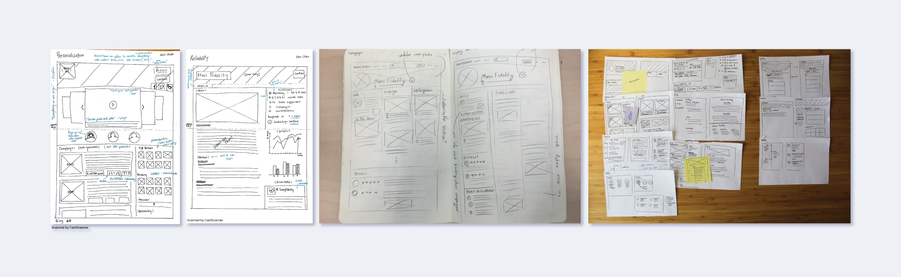
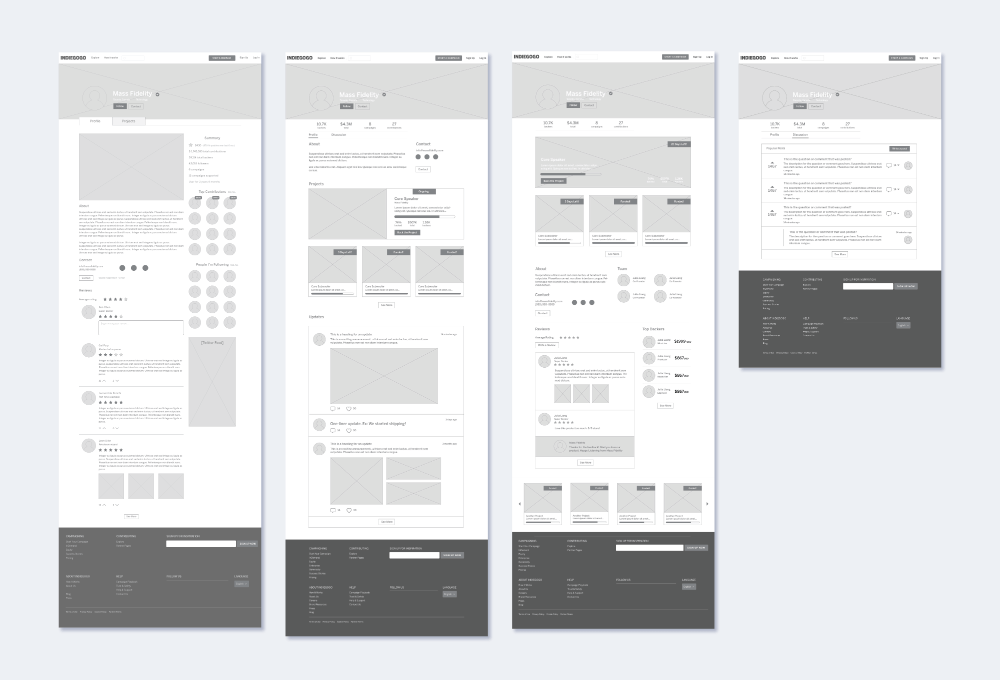
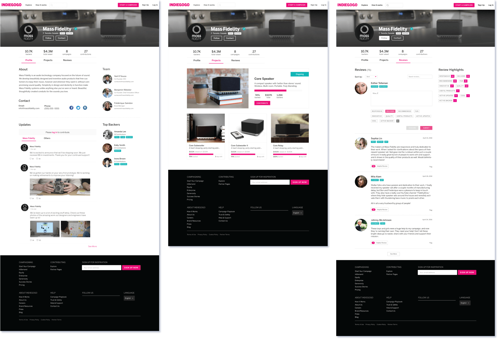

As Indiegogo, one of the largest crowd-funding platforms, shifts to becoming more of a marketplace, the platform is looking for opportunities to empower entrepreneurs and backers with longer-term connections.
To help Indiegogo with this goal, I worked with three other student designers (Vanessa Ng, Ken Chen, and Jess Liu) to re-design the profile page to reflect the entrepreneur's journey on the platform and create opportunities for backers who want to support the entrepreneur over the long term.
We worked in four sprints: User Research, Concept Development & Prototyping, User Testing & Iteration, and High Fidelity Presentation. I led the second sprint, and I was primarily involved in transforming user insights into features, creating low-fidelity prototypes, and making mid-fidelity wireframes.
We conducted research by interviewing backers on Indiegogo and entrepreneurs who have run at least one successful campaign on the platform. We discovered that people's main concerns with profile pages fall into the categories: reliability, accessibility, activity, and personalization.
After interviewing backers and entrepreneurs, we gathered our insights sorted them into categories.
We constructed personas for backers and entrepreneurs based on our user research about their motivations, goals, and frustrations. Full personas can be seen here.
Based on our insights from backers and entrepreneurs, we sketched four profiles that focused on reliability, activity, personalization, and the future of Indiegogo as a marketplace. We separately sketched the profiles and looked for convergence in our layouts.
Various sketches created for the four profiles
For each profile, we developed features that pertain to the profile's theme and ranked their importance based on how often backers and entrepreneurs suggested them. We translated these sketches into mid-fidelity mockups, which we then presented to Indiegogo with annotations.
Mid-fidelity mockups created from the sketches
We reconnected with our original pool of entrepreneurs from our user research to get their feedback on the layouts and content. To supplement, we also ran unmoderated remote user testing on UserTesting.com.
After conducting user testing, we began to iterate on the layout of our profiles and some of the features on each. For example, after speaking with users, we realized that the product cards we designed needed to serve campaigns at all stages in the process, so we designed other concepts. We also iterated on reviews, trying to make them more of a discussion platform rather than a rating system.
We also decided to merge the reliability and activity pages because we found that the focus of the two pages was converging on establishing trust between the entrepreneur and the backer. The marketplace and personalization pages were combined into a profile that focuses on establishing the entrepreneur's marketplace presence.
Our final sprint focused on constructing high-fidelity mockups of our profile pages. We let Indiegogo's brand guidelines dictate most of the styling.
High-fidelity mockups of the activity + reliability page
We presented our designs at the Berkeley Innovation Showcase. We also visited the Indiegogo office to present our findings and designs to the design team, and afterward we held a short discussion period about our designs. We're excited to see what Indiegogo might do with our research and designs!
Special thanks to Bianca for mentoring us through the project, Genevieve at Indiegogo for offering constructive feedback throughout the process, and Orly at Indiegogo for putting us in contact with entrepreneurs!
Left to Right: Bianca Romulo, Jess Liu, Vanessa Ng, Julia Liang, and Ken Chen